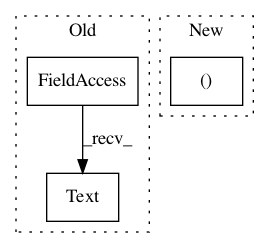

c402572627812ef17bdda31c027cd24159ac73ee,cellprofiler/modules/run_imagej.py,RunImageJ,create_settings,#RunImageJ#,79
Before Change
a group of images. For help on writing macros, see
<a href="http://rsb.info.nih.gov/ij/developer/macro/macros.html">here</a>.)
self.prepare_group_options = cps.Text(
"Options", "",
doc = <i>(Used only if running a command before an image group)</i><br>
Use this setting to provide options to the command.)
self.post_group_choice = cps.Choice(
"Run a command or macro after each group of images?", [CM_NOTHING, CM_COMMAND, CM_MACRO],
doc=You can run an ImageJ macro or a command <i>after</i> each group of
After Change
all_engines = ij2.get_script_service(get_context()).getLanguages()
self.language_dictionary = dict(
[(engine.getLanguageName(), engine) for engine in all_engines])
self.macro_language = cps.Choice(
"Macro language",
In pattern: SUPERPATTERN
Frequency: 3
Non-data size: 3
Instances
Project Name: CellProfiler/CellProfiler
Commit Name: c402572627812ef17bdda31c027cd24159ac73ee
Time: 2012-12-13
Author: leek@broadinstitute.org
File Name: cellprofiler/modules/run_imagej.py
Class Name: RunImageJ
Method Name: create_settings
Project Name: invesalius/invesalius3
Commit Name: 233d55c0d8981d6105b53090e691b6c7ed9f5777
Time: 2009-08-26
Author: tatiana.alchueyr@gmail.com
File Name: invesalius/data/viewer_volume.py
Class Name: Viewer
Method Name: LoadVolume
Project Name: tensorflow/datasets
Commit Name: 64efbe0d8f826b4f7f18102af70f9439b26bd307
Time: 2019-12-12
Author: williamhyzhang@gmail.com
File Name: tensorflow_datasets/image/flic.py
Class Name: Flic
Method Name: _info